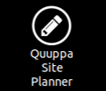
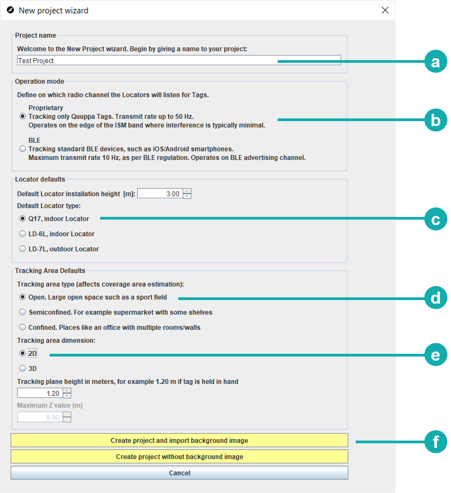
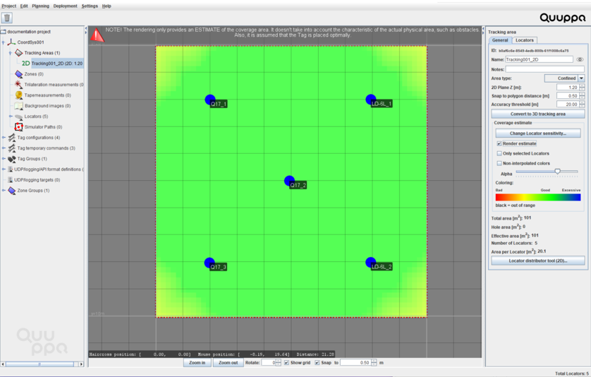

项目规划
设置好开发工具包系统后，就可以使用 Quuppa Site Planner (Quuppa项目规划软件) (QSP) 来规划项目了。此步骤将帮助您评估如何在您的空间中部署项目，并为物理安装做好准备。
-
通过双击 Quuppa 控制器桌面上的 Quuppa Site Planner (Quuppa项目规划软件) 图标来启动 QSP
应用程序。

- 在 QSP 中，使用新建项目向导创建新项目。输入新项目的以下信息：Important: 始终使用点作为小数点分隔符。此外，因为我们在从 Quuppa 系统导出数据时使用 CSV 格式（逗号分隔值），所以对于 Quuppa 项目中任何对象，不要在名称中使用逗号。

- 为项目提供一个描述性的名称。
- 选择专有模式作为工作模式。
- 选择 Q17，室内定位器作为默认定位器类型。
- 根据部署环境选择适当的跟踪区域类型。
- 选择 2D 跟踪区域。
- 选择是否使用背景图像。
- 通过选择创建项目并导入背景图像按钮，系统将提示您选择要导入到项目中的文件，然后将会创建项目文件。
- 通过选择创建无背景图像的项目按钮，将创建一个没有背景图像的新项目文件。
Note: 项目有一些默认设置。可在以后根据需要编辑这些设置，所以现阶段可以先不理会它们。 - 如果使用背景图像，可 缩放图像：Note: 如果已关闭“新建项目向导”但仍要添加背景图像，可从顶部菜单中选择规划 > 添加背景图像来添加。
- 测量实际空间的尺寸（例如墙之间的距离），并在地图上标识用于缩放的参考点。测量应尽可能准确（精确到厘米），因为这可在以后改善跟踪结果。
- 通过单击地图来选择 QSP 中缩放测量的起点（例如一面墙），然后通过单击终点来选择终点（例如另一面墙）。
- 将实际距离输入到向导中（以米为单位）。Note: 如果由于某种原因错过了“缩放向导”，或者想要重新缩放背景图像，请选择图像，然后单击右侧面板中的缩放背景图像按钮以启动“缩放向导”。
如果不使用背景图像，应 测量所使用空间的实际尺寸，以便可以在下一步适当修改跟踪区域多边形。
- 修改跟踪区域多边形以匹配背景图像中的所需区域：
- 从左侧的对象树中选择跟踪区域， 然后单击右侧面板中的编辑多边形按钮。
- 编辑多边形：
- 要移动多边形点，请单击点的顶部并按住鼠标左键，然后拖动以移动。
- 要添加多边形点，请单击多边形的边。
- 要删除多边形点，请用鼠标右键单击点的顶部，或者选择点，然后按删除。
- 添加定位器到您的项目：
- 在顶部的菜单栏中，选择规划 > 添加定位器。地图视图中将显示一个蓝色的定位器圆。重复此过程以添加要在项目中要使用的所需数目的定位器。
- 使用鼠标拖放定位器，将定位器移动到计划的位置。
- 要检查估计的覆盖范围，请在左侧的对象树中选择 2D 跟踪区域（如果需要，可双击跟踪区域来打开可用的
2D
区域列表），然后选中右侧面板中的渲染估计复选框。良好的覆盖范围应显示为绿色。如果覆盖范围显示为黄色或红色，请添加更多定位器或将各定位器移近一些。

- 通过在菜单栏中选择项目 > 保存，保存项目。 Note: 应在部署过程中时不时保存一下项目。